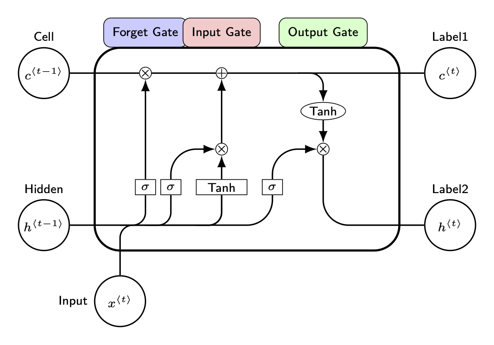
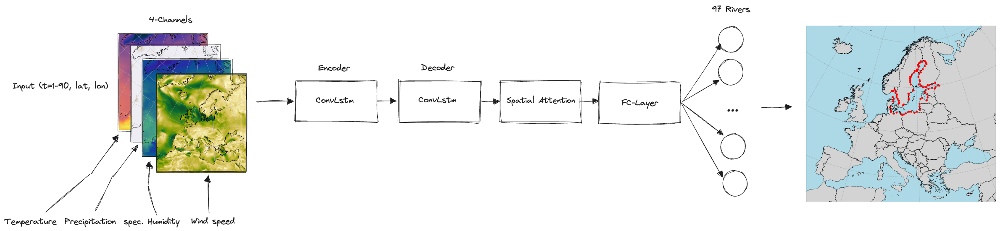
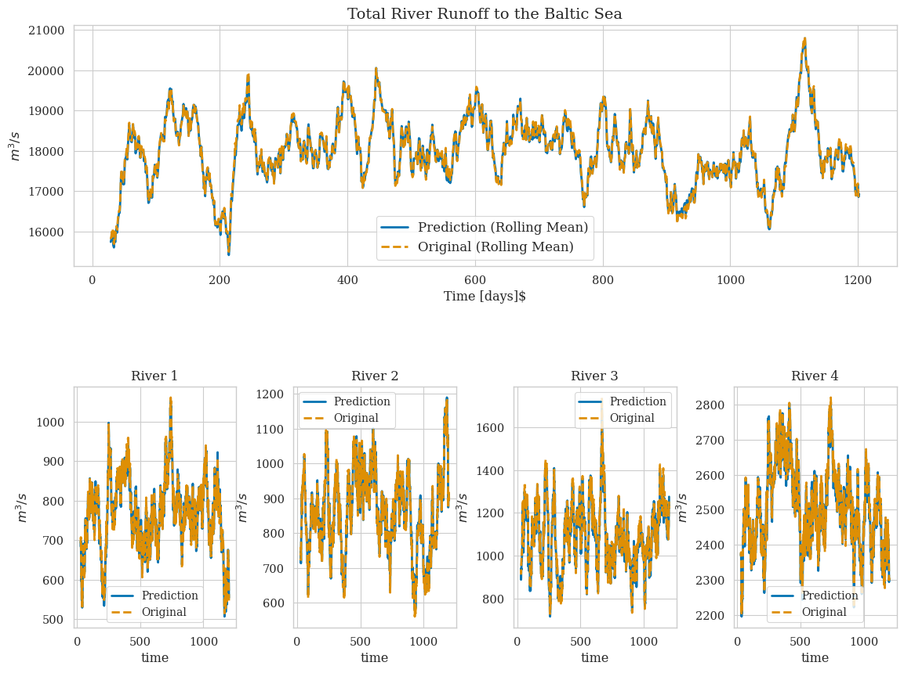
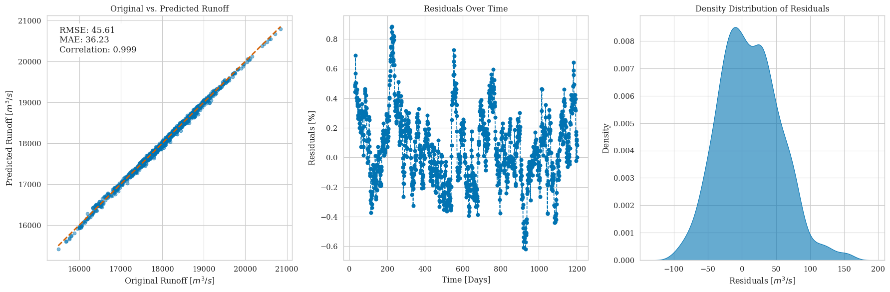
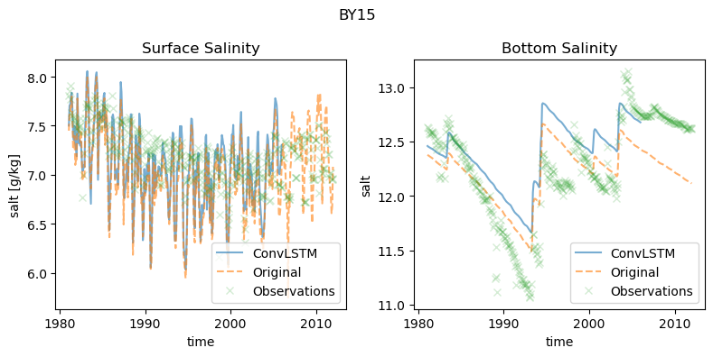

Introduction
River runoff is an important component of the global water cycle as it comprises about one third of the precipitation over land areas [@hagemannHighResolutionDischarge2020]. In the context of climate change studies, river runoff is usually generated in two ways. First, river runoff as input for ocean models can be created using hyrdological models such as the Hydrological Discharge (HD) model [@hagemannHighResolutionDischarge2020]. HD models calculates the water balance using hydrological processes (e.g. snow, glaciers, soil moisture, groundwater contribution). It represents a complex forecasting tool that uses underlying physical processes. A different approach would use data-based models that intergrate statistical correction, using the land surface schemes of global or regional climate models.
The releatively recent rise of machine learning (ML) models has been mostly explored for river runoff forecasting, as accurate runoff forecasting, especially over extended periods, is pivotal for effective water resources management [@fangExaminingApplicabilityDifferent2019; @tanAdaptiveMiddleLongterm2018; @yangDerivingOperatingRules2018]. Common approaches employ artificial neural networks, support vector machines, adaptive neuro-fuzzy inference systems, and notably, Long Short-Term Memory (LSTM) neural networks that have gained traction for long-term hydrological forecasting due to their excellent performance (Humphrey et al 2016, Huang et al 2014, Ashrafi et al 2017, Yuan et al 2018, Xu et al 2021).
LSTM networks, an evolution of the classical Recurrent Neural Networks (RNNs), have shown stability and efficacy in sequence-to-sequence predictions, such as using climatic indices for rainfall estimation or long-term hydrological forecasting. However, a limitation of LSTMs is their inability to effectively capture two-dimensional structures, an area where Convolutional Neural Networks (CNNs) excel. Reconizing this limitation [@shi2015] proposed a convolutional LSTM (ConvLSTM) architectures, which combines the strengths of both LSTM and CNN. The ConvLSTM network has been proven useful for precipitation nowcasting [@shi2015] or for river runoff forecasting [@ha2021; @niu2020].
In the following we will show that in absence of a fully functioning hydrogolocial model, that also uses a rather complex parametrization, ConvLSTM also represent a robust way to predict multiple rivers at once for any given period using only atmospheric forcing. In this work we use the Baltic Sea catchment to illustrate our approach, while in principal the methodology we propose is universally applicable across various geographic regions. The Baltic Sea serves as a challenging example due to its unique hydrological characteristics, being nearly decoupled from the open ocean (see Figure). As a consequence, the salinity of the Baltic Sea is driven to a large part by freshwater supply from rivers. More generally, the freshwater input into the Baltic Sea comes either as river runoff or a positive net precipitation (precipitation minus evaporation) over the sea surface. The net precipitation accounts for 11 % and the river input for 89 % of the total freshwater input (Meier and Doescher, 2002). Modeling the Baltic Sea is therefore to a large part the result of the quality of the river input, that is used for the simulation. This makes the accurate modeling of river runoff especially critical for simulations pertaining to the Baltic Sea.
In this work we will, we present a ConvLSTM architecture that is able to predict daily river runoff for 97 rivers across the Baltic Sea catchment.
Methods
Runoff data used for training
Atmospheric Forcing
LSTM network
The Long Short-Term Memory (LSTM), a specialized form of Recurrent Neural Networks (RNNs), is specifically tailored for modeling temporal sequences. Its unique design allows it to adeptly handle long-range dependencies, setting it apart from traditional RNNs in terms of accuracy (see Figure 1).

This performance in modeling long-range dependencies has been validated in various studies. The key component of LSTM’s innovation is its memory cell, \(c_t\)t, which stores state information, also refered to as long-term memory. This cell is accessed, modified, and reset through several self-parameterized gates. For the input of the sequence \(x_t\) input, the forget gate \(f_t\) defines the percentage of the previous long-term memory status \(c_{t-1}\) that should be retained stored. Next the input gate \(i_t\) decides how much of the input is added to the the long-term memory, forming the updated cell state \(c_{t}\). The decision to propagate the latest cell output, \(c_t\), to the final state, \(h_t\), is governed by the output gate, \(o_t\), representing the updated short-term memory of the hidden state \(h_t\). A significant advantage of this architecture is the memory cell’s ability to retain gradients. This mechanism addresses the vanishing gradient problem, where, as input sequences elongate, the influence of initial stages becomes harder to capture, causing gradients of early input points to approach zero. The LSTM’s activation function, inherently recurrent, mirrors the identity function with a consistent derivative of 1.0, ensuring the gradient remains stable throughout backpropagation.
One LSTM cell hence maybe expressed as:
\[ \begin{aligned} i_t &= \sigma(W_{xi} x_t + W_{hi} h_{t-1} + W_{ci} \circ c_{t-1} + b_i) \\ f_t &= \sigma(W_{xf} x_t + W_{hf} h_{t-1} + W_{cf} \circ c_{t-1} + b_f) \\ c_t &= f_t \circ c_{t-1} + i_t \circ \tanh(W_{xc} x_t + W_{hc} h_{t-1} + b_c) \\ o_t &= \sigma(W_{xo} x_t + W_{ho} h_{t-1} + W_{co} \circ c_t + b_o) \\ h_t &= o_t \circ \tanh(c_t) \end{aligned} \]
with
- \(x_t\): Input vector at time step \(t\).
- \(h_{t-1}\): Hidden state from the previous time step.
- \(C_{t-1}\): Cell state from the previous time step.
- \(W\) and \(b\): Weight matrices and bias vectors, respectively, associated with the gates of the LSTM. The subscripts denote the specific gate or operation they are associated with (e.g., \(W_f\) and \(b_f\) are the weight matrix and bias for the forget gate).
- \(\sigma\): Sigmoid activation function (\(0,\ldots 1\))
- \(\tanh\): Hyperbolic tangent activation function ($ -1 1$)
ConvLSTM network
The FC-LSTM fails to handle information when handling spatiotemporal data due to its reliance on full connections in both input-to-state and state-to-state transitions. To adress this limitation we use a convLSTM architecture. convLSTM replaces the fully connected operations in the LSTM with convolutional operations. Hence, all inputs \(X_1, \ldots, X_t\), cell outputs \(C_1, \ldots, C_t\), hidden states \(H_1, \ldots, H_t\), and gates \(i_t, f_t, o_t\) of the ConvLSTM are 3D tensors. The last two dimensions of these tensors represent spatial dimensions, specifically rows and columns. Conceptually, these inputs and states can be visualized as vectors positioned on a spatial grid.
In the ConvLSTM, the future state of a specific cell on this grid is determined by the inputs and past states of its neighboring cells. This spatial consideration is integrated by employing a convolution operator in both state-to-state and input-to-state transitions, as illustrated in Fig. 2. The foundational equations for ConvLSTM are:
\[ \begin{aligned} i_t &= \sigma(W_{xi} \ast X_t + W_{hi} \ast H_{t-1} + W_{ci} \circ C_{t-1} + b_i) \\ f_t &= \sigma(W_{xf} \ast X_t + W_{hf} \ast H_{t-1} + W_{cf} \circ C_{t-1} + b_f) \\ C_t &= f_t \circ C_{t-1} + i_t \circ \tanh(W_{xc} \ast X_t + W_{hc} \ast H_{t-1} + b_c) \\ o_t &= \sigma(W_{xo} \ast X_t + W_{ho} \ast H_{t-1} + W_{co} \circ C_t + b_o) \\ H_t &= o_t \circ \tanh(C_t) \end{aligned} \]
In summary, the ConvLSTM excels at processing tasks that demand a combined understanding of spatial patterns and temporal sequences in data. It merges the image-processing capabilities of Convolutional Neural Networks (CNNs) with the time-series modeling of Long Short-Term Memory (LSTM) networks.
Implemented model architecture
The ConvLSTM architectures uses and encoder/decoder structure as discussed in TODO. To predict all 97 rivers entering the Baltic Sea, we flatten the output and use fully connected layers to map onto the individual rivers outputs.
An overview of the model structure is given below

For the computation we use the following set of hyper parameters:
| Parameter name | Parameter size |
|---|---|
| Channel size | 4 |
| Num. hidden layer | 10 |
| Num. timesteps | 30 |
| Conv. Kernelsize | (9,9) |
| Num. ConvLSTM layers | 1 |
| Batch size | 64 |
| Learning Rate | 1e-3 with CosineAnnealing |
As input the model receives 30 days of atmospheric surface fields temperature \(T\), precipitation \(P\), specific humidity \(Q\) and wind speed \(W\), with a daily resolution to predict the river runoff \(R\) at the time step \(\Delta t+1\) , which can be summarized as
\(R_{\Delta t+1} = f\left(T_{t-30:t}, P_{t-30:t}, Q_{t-30:t}, W_{t-30:t}\right)\)
with f being a function maps the 30 days of daily atmospheric surface fields data to the predicted river runoff.
The choice of atmospheric fields was based on the implemented river runoff calculation in the atmospheric model COSMO-CLM which uses these four fields to calculate an river runoff estimate.
Results
For the evaluation of the model performance we consider the period 1979 to 2011. For this period no bias correction was applied to the orignal E-HYPE dataset. We chose a split of 80% training data, 10% validation data to evaluate the performance of the model during training, and 10% training data that is finally used to evaluate the performance of the model after training.
Figure 3 shows the perfomance of the model using the test dataset. The predicted total river runoff for the Baltic Sea is closely matching the original data. Zooming in on the largest individual rivers (lower panels) it can be seen that that also the prediction of the inidivual rivers is close to the original data.

The accuracy of the model is further displayed in Figure 4 . The correlation is close to 1 and the residuals show the error of the model is below 1% of the original data.

Lastly, we evaluated the performance of the runoff model by incorporating the predicted river runoff as forcing into the ocean model MOM5. This provides a robust validation of the runoff model against more complex real world conditions. This allows us to ensure that the predictions accurately reflect the impact of the river discharge on the ocean dynamics, validating the temporal and spatial variability of the the river discharge. ?@fig-by15 shows the salinity comparison between the original E-HYPE river runoff and the predicted river runoff at BY15 - a central stations in the Baltic Sea.

Acknowledgments
Phasellus interdum tincidunt ex, a euismod massa pulvinar at. Ut fringilla ut nisi nec volutpat. Morbi imperdiet congue tincidunt. Vivamus eget rutrum purus. Etiam et pretium justo. Donec et egestas sem. Donec molestie ex sit amet viverra egestas. Nullam justo nulla, fringilla at iaculis in, posuere non mauris. Ut eget imperdiet elit.
Open research
Phasellus interdum tincidunt ex, a euismod massa pulvinar at. Ut fringilla ut nisi nec volutpat. Morbi imperdiet congue tincidunt. Vivamus eget rutrum purus. Etiam et pretium justo. Donec et egestas sem. Donec molestie ex sit amet viverra egestas. Nullam justo nulla, fringilla at iaculis in, posuere non mauris. Ut eget imperdiet elit.